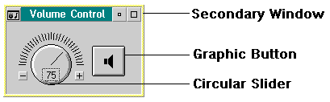

This chapter describes how to create and manage your own customized windows, graphic buttons and secondary windows. OS/2 multimedia applications, such as Volume Control shown in the following figure provide you with examples of multimedia control implementations.
The SW.DLL dynamic link library, located in the \MMOS2\DLL subdirectory contains the functions that support creating and manipulating these controls. (The SW.H file is included with the Toolkit and contains the prototypes, constants, and data structures your application needs.) Refer to the PM Guide and Reference for information on creating circular sliders (dials).
Refer to the CUA Guide to Multimedia User Interface Design for more information about creating consistent user interfaces for multimedia controls.